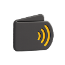

Welcome Pack up to
A$4,000 + 400 Free Spins
Play Now
Best Inclave Casinos in Canada 2025
In 2025, more Canadian players are turning to Inclave casino platforms
for a faster and safer way to play online. Thanks to the Inclave login
system, users can access multiple gambling sites with just one secure
account. Therefore, there is no need to remember passwords or fill out
long sign-up forms each time. These platforms offer top-tier games,
generous bonuses, and fast payments. In this article, you will find
the best options to choose from and learn how to get started with
Inclave to have the most enjoyable betting experience.
What Is an Inclave and How Does It Work?
-
What is an Inclave? It is a smart, secure login
tool that helps you sign in to online casinos using your
fingerprint or face instead of a password. It is designed to make
the whole process faster, easier, and much safer.
-
In the online gambling sphere, especially in
Canada, Inclave casino login is becoming more common. If you are
using it, you don’t have to remember long passwords or create new
ones for each site. Instead, this system allows you to sign in
across multiple platforms with the same data. This saves time and
reduces the risk of unauthorized access to your account.
-
Once you create an Inclave account, you link it to your biometric
data on your device. When you visit a casino of your choice, click
“Login with Inclave”, confirm your identity using your face or
fingerprint, and you are in! No typing is required. Inclave also
adds an extra layer of protection by sending real-time security
alerts if anything unusual happens with your account.
-
Overall, Inclave is a smart, modern way to log into online casinos
in Canada. It is fast, secure, and easy to use. Although not as
popular at the moment, the more websites become available through
this system, the more gambling platforms are going to implement it
for their clients.
Casino Games Offered at Inclave Casinos in Canada
Inclave casinos in Canada
Offer a wide variety of games to suit every type of player.
One of the biggest draws is the large selection of slots.
These include everything from simple fruit machines to more
sophisticated Inclave games with bonus rounds and cascading
reels. Gambling websites usually provide access to thousands
of options to choose from.
Fast-Paced Gameplay
If you are into more fast-paced gameplay, crash Inclave
casino games are also available. Such titles as Aviator,
JetX, and Spaceman are the most popular in Canada. They are
exciting and high-risk, with opportunities to receive
incredible winnings.
Wide Range of Options
Overall, gambling websites offer a wide range of options for
players from Canada. The Inclave login system makes it easy
to access all these types of games quickly and securely.
Casino Experience
Fans of traditional casino experience will enjoy the many
table games offered. You can play classic blackjack,
roulette, baccarat, and poker. They are available either
through digital forms or through live dealer options. It is
the closest thing to being in a real casino but from your
home. Bingo is another favourite found in many casino
collections.
Inclave Casino Bonuses and Free Spins
Users of online casinos in Canada can take advantage of a wide range
of exciting promotions. From generous Welcome offers to daily rewards,
these gambling platforms make sure you are always getting something to
boost your gameplay. Many sites also provide Inclave casino bonus
codes to unlock special deals. Here are some of the options you can
typically find online:
Welcome bonus
Offer a wide variety of games to suit every type of player.
One of the biggest draws is the large selection of slots.
These include everything from simple fruit machines to more
sophisticated Inclave games with bonus rounds and cascading
reels. Gambling websites usually provide access to thousands
of options to choose from.
Reload promotions
If you are into more fast-paced gameplay, crash Inclave
casino games are also available. Such titles as Aviator,
JetX, and Spaceman are the most popular in Canada. They are
exciting and high-risk, with opportunities to receive
incredible winnings.
No deposit bonuses
Overall, gambling websites offer a wide range of options for
players from Canada. The Inclave login system makes it easy
to access all these types of games quickly and securely.
Cashback
Fans of traditional casino experience will enjoy the many
table games offered. You can play classic blackjack,
roulette, baccarat, and poker. They are available either
through digital forms or through live dealer options. It is
the closest thing to being in a real casino but from your
home. Bingo is another favourite found in many casino
collections.
Loyalty programs
Fans of traditional casino experience will enjoy the many
table games offered. You can play classic blackjack,
roulette, baccarat, and poker. They are available either
through digital forms or through live dealer options. It is
the closest thing to being in a real casino but from your
home. Bingo is another favourite found in many casino
collections.
Play Now
Available Payment Methods at Inclave Casinos
Inclave login casinos offer players a wide range of secure and
convenient payment methods. Here are some of them:
Cryptocurrencies
Cryptocurrencies like Bitcoin, Ethereum, and Litecoin are
becoming more widely accepted at Inclave casinos. They offer
fast, secure, and anonymous transactions. Deposits are
usually completed in minutes, and withdrawals are processed
within an hour.

Bank transfers
Bank transfers, including Canadian service Interac, are a
secure but slower payment method. They are especially
preferred for larger transactions. Deposits are processed
within 24 hours, while withdrawals can take up to 5 business
days.
E-wallets
E-wallets such as Skrill, Neteller, and ecoPayz are highly
used at online casinos for their speed and privacy. They
allow depositing and withdrawing funds without sharing bank
details directly with the casino. Deposits appear instantly,
and cashouts are typically processed within 24 hours. For
players who want fast access to their winnings, e-wallets
are one of the best choices.
Credit and debit cards
Credit and debit cards like Visa and Mastercard are the most
widely used payment methods in online casinos. They are
familiar to most people, easy to use, and widely accepted.
Deposits are usually processed instantly, letting you start
playing right away. Withdrawals, however, can take up to
several days to complete, depending on the casino and your
bank. Despite slower cashout times, many players prefer this
method.
Is Inclave Safe? Security and Privacy Explained
The Inclave log in system is considered to be a very safe choice
for online casino players. It was built to improve how users
access different websites by replacing traditional passwords with
advanced sign-in methods like fingerprints or face recognition.
This makes it so much harder for hackers to access your account,
even if they have your email address. Inclave also stores your
personal data and login credentials in a centralized, encrypted
system that follows strict privacy and security standards. This
means casinos never directly hold your sensitive information,
reducing the chances of leaks and breaches. As for legality,
playing at Inclave casinos is permitted in Canada as long as you
choose licensed and regulated sites. These platforms must have
clear terms and conditions, access to responsible gambling tools,
and safe payment methods. When choosing a casino to play at,
always check its licensing information, certifications, game
providers, and data security methods. Overall, Inclave provides
one of the most secure and private ways to access online casinos
today. Besides, it is fast, convenient, and is getting more
popular each day.
Newest Inclave Casinos to Explore
In recent years, many new Inclave casinos have been launched, offering
Canadian players enhanced security and convenience. These platforms
provide seamless access to a variety of betting options. If you are
interested in the most prominent options, refer to the Inclave casino
login list below:
Instant Casino
This platform is renowned for its rapid withdrawal system,
allowing players to receive their winnings within 24 hours or
less. The casino offers a diverse selection of games, including
slots, table games, and live dealer options.
Instant Casino
This platform is renowned for its rapid withdrawal system,
allowing players to receive their winnings within 24 hours or
less. The casino offers a diverse selection of games, including
slots, table games, and live dealer options.
Instant Casino
This platform is renowned for its rapid withdrawal system,
allowing players to receive their winnings within 24 hours or
less. The casino offers a diverse selection of games, including
slots, table games, and live dealer options.
Step-by-Step Guide to Inclave Login
Getting started at Inclave casinos is quick and user-friendly. If you
are new to the system, follow these simple steps to complete your
registration:
Step 1
Create your Inclave account
Head to the Inclave website and set up an account. You’ll need
to provide your full name, email address, date of birth, gender,
country, mobile number, currency, and password. It only takes a
minute and includes setting up a fingerprint or face ID for
future logins.
Step 2
Verify your email
A verification code will be sent to your email. Enter it to
activate your Inclave account.
Step 3
Choose a trusted casino
There are plenty of casinos that support Inclave in Canada. If
you do not know where to find a good platform, check out our
list of recommended options.
Step 4
Hit the “Sign Up” button
On the casino’s homepage, find the “Registration” or “Sign Up”
button. It is usually located in the upper right corner. There,
choose the Inclave casino sign up option. You should be able to
use your biometrics to access the platform.
Advantages and Disadvantages of Using Inclave
Inclave casinos are becoming more popular in Canada every day. If you
are still on the fence about using the options outlined in our Inclave
casino list Canada, the pros and cons below will provide you with
enough information for a solid decision.
Pros
- Extensive game library from top providers;
-
All transactions are processed in CAD, eliminating conversion
fees;
-
Incredible promotions for both new and existing players;
- Convenient payment options, including cryptocurrencies.
Cons
- Limited options for withdrawals.
Conclusion
If you are looking for the best Inclave casino in Canada, 2025 is the
perfect time to explore your options. This login system slowly but
surely integrates into the world of online gambling. With just one
account, players can sign in to multiple casinos, like Rocketplay,
Winspirit, and Crown Pokies, using biometric data instead of
traditional passwords. With increased safety and convenience they
offer, Inclave casinos are definitely worth a try.
FAQ
What is an Inclave casino?
An Inclave casino is an online gambling site that lets you sign in
using biometrics instead of a password.
Is Inclave safe to use in Canada?
Yes, absolutely. Inclave uses strong encryption technologies to
protect your credentials. It also sends alerts if something
suspicious happens.
Why should I use an Inclave casino?
Inclave casinos offer extra security, fast login, and easy access
to gambling. You don’t need to remember passwords for each
platform you want to play at. One account can be used for several
betting platforms if they are included on the Inclave login casino
list.
Do I need special devices to use Inclave?
You will need a phone or computer that supports fingerprint or
face recognition. Most modern mobile devices have this feature.
Where can I find Inclave casinos?
We provide an extensive list of Inclave casinos, among which are
Winspirit, Rocketplay, and Crown Pokies.
Is Inclave free to use?
Yes, creating and using an Inclave account is completely free.
However, if you want to win real money in a casino of your choice,
you’ll need to make a deposit.